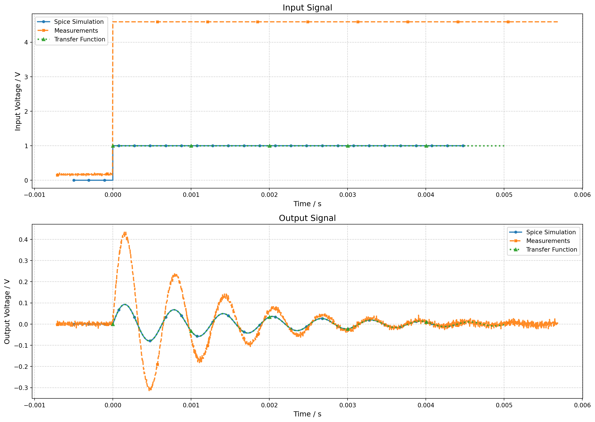
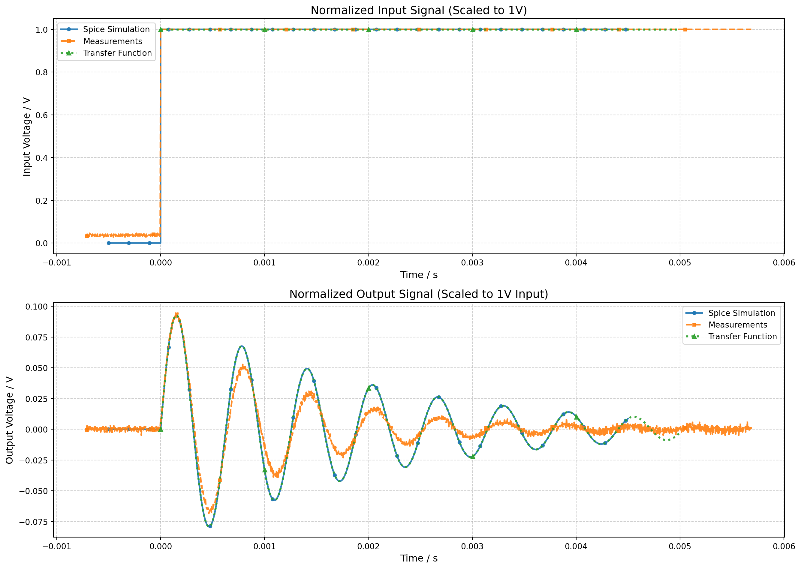

\[ R_{ohm} = \frac{U}{I} \tag{6.1}\]
\(U\) … Spannung am Widerstand als Ausgang
\(R_{ohm}\) … Ohm’scher Widerstand als Übertragungsfunktion
\(I\) … Strom am Widerstand als Eingang
oder die Anstrengung der Faulen.
Um eine Übertragungsfunktion zu Berechnen muss der Ausgang durch den Eingang dividiert werden. Wird das physikalische System durch eine lineare Gleichung beschrieben ist das sehr Einfach möglich und die Laplace Transformation ist nicht notwendig. Ein Beispiel dafür ist das Ohm’sche Gesetz.
\[ R_{ohm} = \frac{U}{I} \tag{6.1}\]
\(U\) … Spannung am Widerstand als Ausgang
\(R_{ohm}\) … Ohm’scher Widerstand als Übertragungsfunktion
\(I\) … Strom am Widerstand als Eingang
Wird das physikalische System aber durch eine Differentialgleichung beschrieben, wie zum Beispiel bei einem Tiefpass, so wäre es notwendig zuerst die Differentialgleichung zu lösen um die Übertragungsfunktion zu berechnen. Hier bietet die Laplace Transformation eine erhebliche erleichterung.
Wird die Übertragungsfunktion im Laplace-Bereich angeschrieben, ergeben sich weitere Vorteile, wenn es später darum geht einen Regler zu entwerfen und die Stabilität einer Strecke zu beurteilen.

\[\ni_{c}{\left(t \right)} = C \frac{d}{d t} u_{c}{\left(t \right)}\n \tag{6.2}\]
\[\ni_{c}{\left(t \right)} = \frac{- u_{c}{\left(t \right)} + u_{in}{\left(t \right)}}{R_{ohm}}\n \tag{6.3}\]
Durch Gleichsetzten von Gleichung 6.2 und Gleichung 6.3 ergibt sich die allgemeine Differenzialgleichung 1. Ordnung für den Tiefpass.
\[\nC \frac{d}{d t} u_{c}{\left(t \right)} = \frac{- u_{c}{\left(t \right)} + u_{in}{\left(t \right)}}{R_{ohm}}\n \tag{6.4}\]
\(t\) … Zeit
\(R_{ohm}\) … Ohmscher Widerstand
\(C\) … Kapazität
\(u_{in}{\left(t \right)}\) … Eingangsspannung
\(i_{c}{\left(t \right)}\) … Strom
\(u_{c}{\left(t \right)}\) … Ausgangsspannung
Müsste nun von dieser Differentialgleichung die Übertragungsfunktion, also \(G=Ausgang/Eingang\), angegeben werden, so müsste zunächst die Differentialgleichung gelöst werden.
Die Laplace Transformation bietet hier einen alternativen Weg der mit weiteren Vorteilen verbunden ist wenn es darum geht Blöcke miteinander zu kombinieren oder Aussagen über das System zu treffen.
Die tiefere Mathematik der Laplacetransofrmation überlassen wir hier den Mathematiker:innen und den ersten Semestern eines Studiums. Wir wollen die Laplacetransformation lediglich als Werkzeug zur vereinfachung unserer Arbeit verwenden. Dazu benötigen wir folgende Grundregeln.
Vereinfacht ist die Laplacetransformation als eine Übersetzung aus dem Zeitbereich, also mit der variable \(t\), in den Frequenzbereich mit der Variable \(s\) zu verstehen. Die Übersetzung erfolgt in vielen Fällen sehr einfach mittels Tabelle. Hier wird die Transformation nur für ausgewählte Signale und mathematische Operationen angeführt.
| Zeitbereich x(t) | Frequenzbereich X(s) | Bemerkung |
|---|---|---|
| \(\frac{d \ x(t)}{d \ t}\) | \(s \cdot X(s) - x(0)\) | Transformation der Ableitung nach der Zeit, \(x(0)\) ist dabei der Wert zum Zeitpunkt Null. Bei einem Kondensator wäre dies zum Beispiel der Ladezustand zu Beginn. |
| \({ \int x(t) \, d \ t}\) | \(\frac{1}{s} \cdot X(s)\) | Transformation der Integration über der Zeit |
| \(\delta (t)\) | \(1\) | Transformation des Impulses |
| \(\sigma (t)\) | \(\frac{1}{s}\) | Transformation des Sprunges |
| \(e^{at}\) | \(\frac{1}{s -a}\) | |
| \(\frac{1}{a} e^{\frac{-t}{a}}\) | \(\frac{1}{1 + as}\) |
Wird nun Gleichung Gleichung 6.4 mittels der Tabelle Tabelle 6.1 transformiert erhalten wir eine Gleichung aus der wir durch einfaches Umformen eine Übertragungsfunktion erhalten. Es wird angenommen, dass $ x(0) = 0 $ ist.
\[\nC U_{C} s = \frac{- U_{C} + U_{IN}}{R_{ohm}}\n \tag{6.5}\]
\[\nG = \frac{U_{C}}{U_{IN}}\n \tag{6.6}\]
\[\nG = \frac{1}{C R_{ohm} s + 1}\n \tag{6.7}\]
The goal of this analysis is to compare the step response of a series CLR circuit with output taken across the resistor R, using three different methods: 1. Spice Simulation (spice) 2. Physical Measurements (Tektronix TBS1072C Oscilloscope) 3. Transfer Function Simulation (Python-based numerical solution)
The circuit consists of three components in series: Capacitor (C), Inductor (L), and Resistor (R). The output voltage is taken across the resistor R.

Component Values: - \(C = 1\ \mu\text{F}\) - \(L = 10\ \text{mH}\)
- \(R = 10\ \Omega\)
The Spice simulation data was obtained using LTspice circuit simulator. The circuit was modeled with ideal components (C = 1 μF, L = 10 mH, R = 10 Ω) and a step input voltage was applied. The simulator computes the voltage across the resistor (V_out) over time, providing high-precision theoretical results based on the circuit’s differential equations.
Physical measurements were taken using a Tektronix TBS1072C oscilloscope. The actual circuit was constructed with the specified component values, and a step input was applied. The oscilloscope captured the voltage signals at the input and across the resistor, storing the data in CSV format. Note: The measurement input voltage was higher than the simulation, which is why normalization is applied for fair comparison.

The Transfer Function simulation is a Python-based computational model that solves the circuit’s Laplace domain transfer function numerically. Using scipy’s signal processing library, the step response is computed from the transfer function coefficients derived from the component values.
Applying Kirchhoff’s Voltage Law (KVL) to the series CLR circuit:
\[V_{in}(t) = V_R(t) + V_L(t) + V_C(t)\]
Where the voltage across each component is related to the current \(i(t)\):
Differentiating both sides of the KVL equation and substituting the component relationships:
\[\frac{dV_{in}(t)}{dt} = R \cdot \frac{di(t)}{dt} + L \cdot \frac{d^2i(t)}{dt^2} + \frac{1}{C} \cdot i(t)\]
Rearranging gives the second-order differential equation:
\[L \cdot \frac{d^2i(t)}{dt^2} + R \cdot \frac{di(t)}{dt} + \frac{1}{C} \cdot i(t) = \frac{dV_{in}(t)}{dt}\]
Since the output voltage is across the resistor: \(V_{out}(t) = V_R(t) = R \cdot i(t)\)
Assuming zero initial conditions, we apply the Laplace transform to both sides:
\[\mathcal{L}\left\{L \cdot \frac{d^2i(t)}{dt^2} + R \cdot \frac{di(t)}{dt} + \frac{1}{C} \cdot i(t)\right\} = \mathcal{L}\left\{\frac{dV_{in}(t)}{dt}\right\}\]
Using Laplace transform properties:
Substituting these into the transformed equation:
\[L \cdot s^2 I(s) + R \cdot s I(s) + \frac{1}{C} \cdot I(s) = s V_{in}(s)\]
Factor out \(I(s)\):
\[I(s) \cdot \left(L s^2 + R s + \frac{1}{C}\right) = s V_{in}(s)\]
Solving for \(I(s)\):
\[I(s) = \frac{s V_{in}(s)}{L s^2 + R s + \frac{1}{C}} = \frac{s C V_{in}(s)}{L C s^2 + R C s + 1}\]
Since \(V_{out}(t) = R \cdot i(t)\), in the Laplace domain:
\[V_{out}(s) = R \cdot I(s) = R \cdot \frac{s C V_{in}(s)}{L C s^2 + R C s + 1}\]
Therefore, the transfer function \(H(s) = \frac{V_{out}(s)}{V_{in}(s)}\) is:
\[H(s) = \frac{R \cdot s C}{L C \cdot s^2 + R C \cdot s + 1} = \frac{s R C}{L C s^2 + R C s + 1}\]
This can be simplified by dividing numerator and denominator by \(LC\):
\[H(s) = \frac{s \cdot \frac{R}{L}}{s^2 + s \cdot \frac{R}{L} + \frac{1}{L C}}\]
However, the standard form for analysis is:
\[H(s) = \frac{s R C}{L C s^2 + R C s + 1}\]
With the given component values (\(R = 10\ \Omega\), \(L = 10\ \text{mH} = 0.01\ \text{H}\), \(C = 1\ \mu\text{F} = 10^{-6}\ \text{F}\)):
Substituting these values:
\[H(s) = \frac{10^{-5} s}{10^{-8} s^2 + 10^{-5} s + 1}\]
From the denominator \(L C s^2 + R C s + 1\), we can identify the standard second-order form:
For a general second-order system \(s^2 + 2\zeta\omega_n s + \omega_n^2\), we have:
\[\omega_n^2 = \frac{1}{L C} \quad \Rightarrow \quad \omega_n = \frac{1}{\sqrt{L C}} = 10^4\ \text{rad/s}\]
\[2\zeta\omega_n = \frac{R C}{L C} = \frac{R}{L} \quad \Rightarrow \quad \zeta = \frac{R}{2 L \omega_n} = \frac{R}{2} \sqrt{\frac{C}{L}} \approx 0.1581\]
Since \(\zeta < 1\), the circuit is underdamped and will exhibit oscillatory behavior.
Loaded Spice Simulation from StepResponseSpiceSim.csv
Loaded Measurements from TEK00000.CSV
Generated Transfer Function data from calculation
Shifted Spice Simulation time by -500us
Data loaded:
Spice Simulation: 5025 points, time range: -0.000500 to 0.004500 s
Measurements: 2000 points, time range: -0.000710 to 0.005686 s
Transfer Function: 1000 points, time range: 0.000000 to 0.005000 s
The following values are extracted from each dataset:
Spice Simulation:
Frequency: 1599.68 Hz
Amplification: 0.0927
Peak Output: 0.0927 V
Peak Input: 1.0000 V
Measurements:
Frequency: 1562.60 Hz
Amplification: 0.0946
Peak Output: 0.4340 V
Peak Input: 4.5900 V
Transfer Function:
Frequency: 1598.40 Hz
Amplification: 0.0926
Peak Output: 0.0926 V
Peak Input: 1.0000 V
Theoretical resonant frequency: 1591.55 Hz
Theoretical peak magnitude at resonance: 0.0499Since the measurements were taken with a different input voltage, we normalize all signals to the same input amplitude for fair comparison.

Normalized data:
Spice Simulation: 5025 points, input peak: 1.0000 V, output peak: 0.0927 V
Measurements: 2000 points, input peak: 1.0000 V, output peak: 0.0946 V
Transfer Function: 1000 points, input peak: 1.0000 V, output peak: 0.0926 VThe normalized plots reveal several important insights:
Alignment: After normalizing to the same input voltage (1V), all three signals (Spice Simulation, Physical Measurements, and Transfer Function) now share a common reference, making direct comparison meaningful.
Agreement: The Transfer Function simulation (green dotted line with triangles) serves as the theoretical baseline. The Spice Simulation (blue solid line with circles) closely matches this theoretical behavior, confirming the circuit model accuracy.
Measurement Validation: The Physical Measurements (orange dashed line with squares) follow the same trend as the simulations, though minor deviations may occur due to:
Step Response Characteristics: The normalized output shows the underdamped nature of the circuit with \(\omega_n \approx 10^4\ \text{rad/s}\) and \(\zeta \approx 0.1581\), exhibiting the expected oscillatory behavior.
Amplification Consistency: The peak output values after normalization confirm that all three methods produce similar amplification characteristics, validating both the theoretical model and the measurement setup.
The plots above compare Input and Output signals over time for: - Spice Simulation (blue solid line with circle markers) - Physical Measurements (orange dashed line with square markers) - Transfer Function Simulation (green dotted line with triangle markers)
All three datasets are plotted together on the same time axis to show how well the measurements and Spice simulation match the theoretical transfer function behavior of the series CLR circuit with output across R.
HTL Anichstrasse - Messtechnik und Regelungssysteme
RLC Circuit Analysis